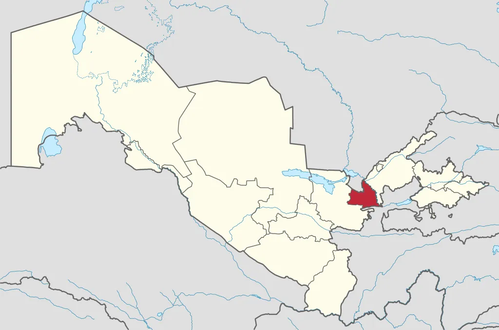

Sirdaryo viloyati
Sirdaryo viloyati - Oʻzbekiston Respublikasi tarkibidagi viloyat. 1963-yil 16 fevralda tashkil etilgan. Shimolidan Qozogʻiston Respublikasi, sharqdan Toshkent viloyati, janubidan Tojikiston Respublikasi va gʻarbdan Jizzax viloyati bilan chegaradosh. Maydoni 5,3 ming km. Aholisi 667.748 kishi (2003). Tarkibida 9 tuman (Boyovut, Guliston, Mehnatobod, Mirzaobod, Oqoltin, Sayxunobod, Sirdaryo, Xovos, Sardoba) (tumanlar haqida alohida maqolalarga qarang, maye. Boyovut tumani), 5 shahar (Guliston, Baxt, Sirdaryo, Shirin, Yangiyer), 6 shaharcha (Boyovut, Dehqonobod, Doʻstlik, Paxtaobod, Sayxun, Xovos) va 75 qishloq fuqarolari yigʻini bor (2004). Markazi — Guliston shahri.
Relyefi, asosan, toʻlqinsimon tekislik boʻlib, janubidan shim.gʻarbga pasayib boradi. Mirzachoʻl dashtining bir qismi viloyat hududiga kiradi. Bal. shimubida 230 m, markaziy qismida 400–450 m, jan. va jan.gʻarbda 600–650 m. Sharqida keng Sirdaryo vodiysi joylashgan. Mezozoy va kaynozoy davrida, asosan, choʻkindi jinslarning qalin qatlami bilan qoplangan. Shoʻroʻzak, Mirzarabot, Sardoba kabi botiqlar mavjud. Tekislik qismi daryolar oqizib keltirgan yotqiziklardan hosil boʻlgan, baʼzi joylarini koʻl, botqoq va shoʻrxok yerlar egallagan. Sirdaryo viloyatida yangi kanallar, zovurlar qazilib, choʻl oʻzlashtirildi va ekin maydonlarga aylantirildi. Tekislik qismida irrigatsiya inshootlari qurilib, paxtazor, bogʻ va tokzorlar barpo qilindi. Adirlar lalmikor yerlar va yaylovlardan iborat.
Sirdaryo viloyatida, asosan, oʻzbeklar (60%), shuningdek, qozoq, tojik, rus va boshqa 70 dan ortiq millat vakillari yashaydi. 1 km² ga 126 kishi toʻgʻri keladi (2003). Qishloq aholisi 455,9 ming kishi, shahar aholisi 211,9 ming kishi. Sirdaryo viloyati respublikaning yirik paxtachilik bazalaridan biri. Viloyat xoʻjaliklari, asosan, paxta yetishtirishga ixtisoslashgan. Sanoati paxtani va boshqa qishloq xoʻjaligi mahsulotlarini qayta ishlashga qaratilgan.